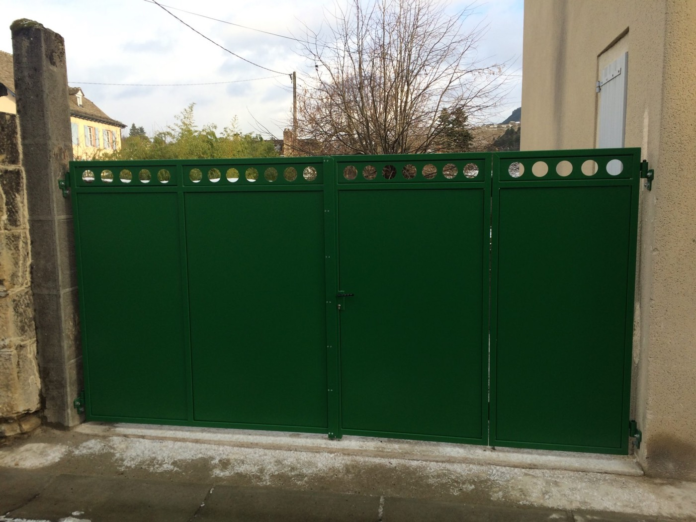
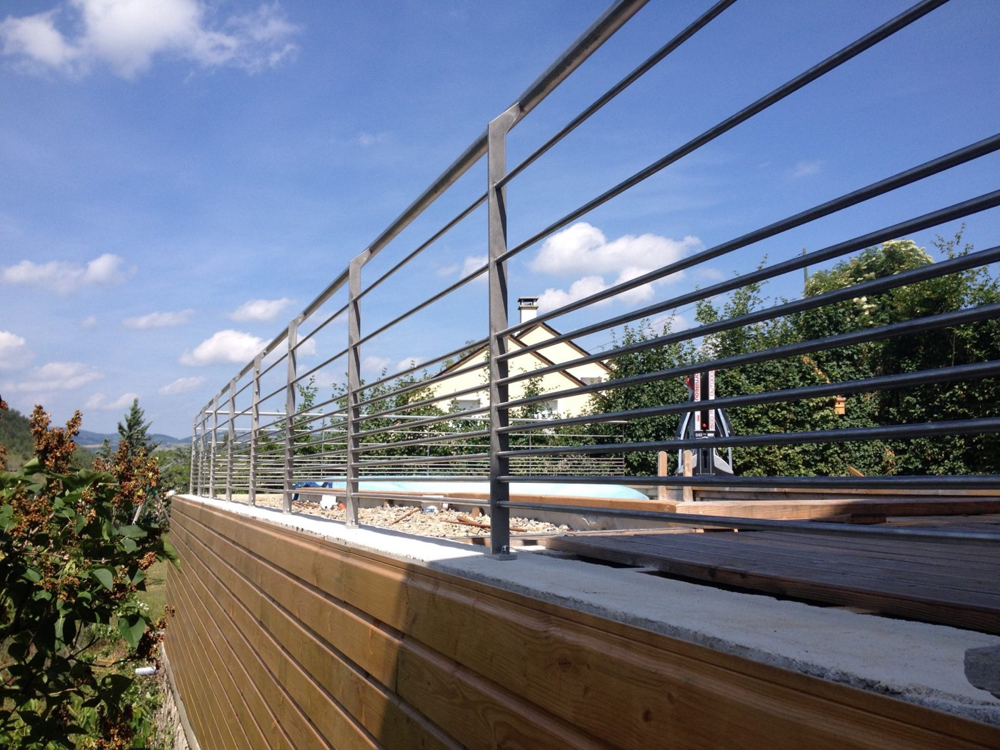
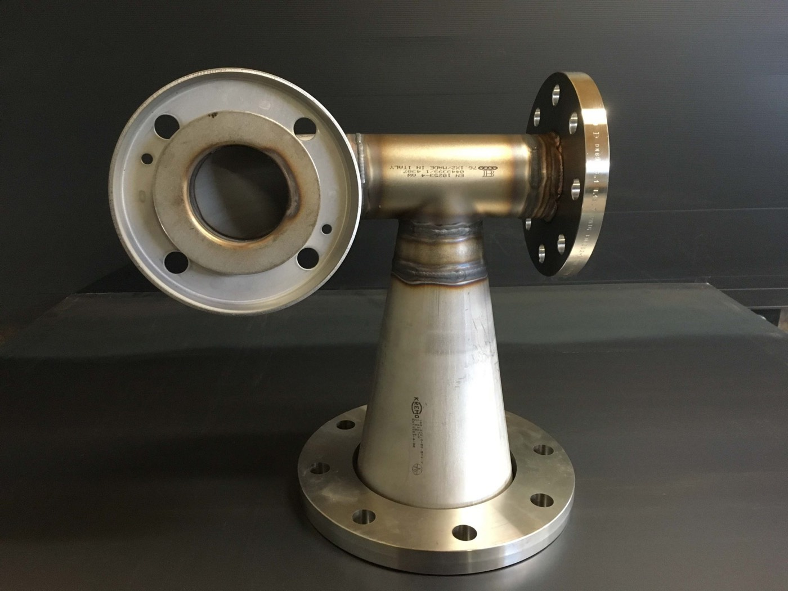
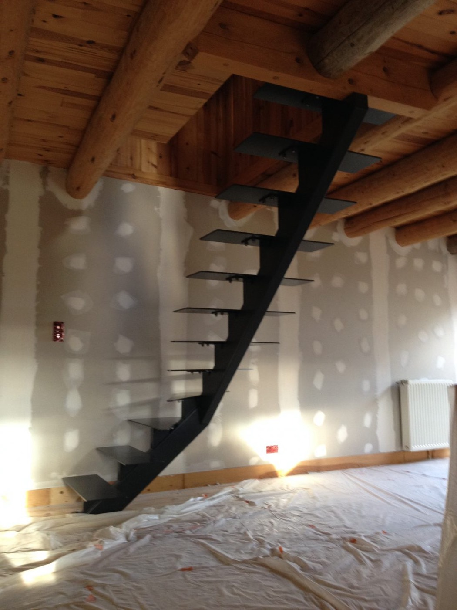
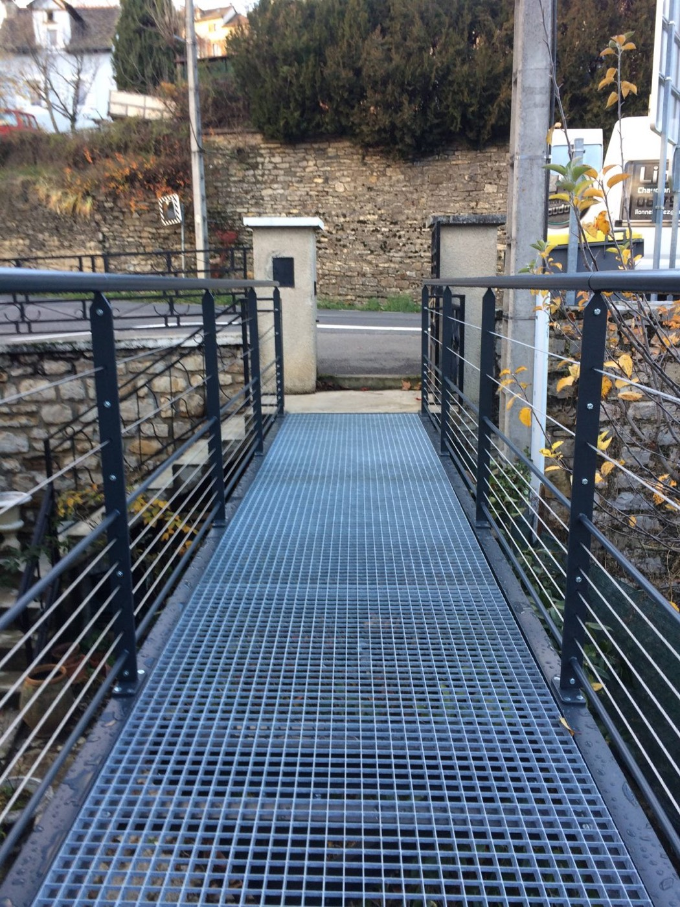

Un chaudronnier, ferronnier, métallier à votre service en Lozère
Lionnel Balez Soudure, implanté à Antrenas, près de Marvejols et Mende, vous offre son savoir-faire en chaudronnerie, ferronnerie et métallerie.
Du lundi au vendredi de 8 h 00 à 18 h 30

- Devis gratuit
- Conseils personnalisés
- Travail soigné
- Respect des délais
- Livraison gratuite de pièces sur siteà confirmer
Chaudronnerie, ferronnerie et métallerie en inox, alu et acier

Chaudronnerie
Chaudronnerie aluminium et chaudronnerie inox, pour les particuliers et les professionnels.
Découvrir →
Ferronnerie – chaudronnerie thermolaquée
Peinture en poudre appliquée par effet électrostatique, puis cuite au four : résistance aux chocs et à la corrosion, grand choix de teintes.
Découvrir →
Ferronnerie inox
Inox, aluminium et acier : produits agricoles, ensembles mécano-soudés, montages de pièces industrielles.
Découvrir →
Mobilier
Chaises, tables, mobilier de jardin : fabrication artisanale, sur-mesure réalisable.
Découvrir →Un spécialiste de la chaudronnerie avec plus de 20 ans d'expérience en Lozèreà confirmer
Depuis plus de 20 ans, Lionnel Balez Soudure est spécialisé en chaudronnerie, ferronnerie et métallerie. Cela a permis à notre entreprise d'acquérir une forte technicité, notamment sur l'inox, l'alu et le métal. Nous sommes en mesure de réaliser tous les travaux de soudure et de vous accompagner sur tout type de projet. Nous travaillons avec les particuliers et avec les professionnels.
Notre rôle est de vous conseiller dans votre projet de façon personnalisée. En fonction de vos besoins, nous réalisons un devis gratuit. Puis le travail demandé est réalisé de manière soignée et dans le respect des délais.

Un expert en ferronnerie chaudronnerie thermolaquée à votre service à Marvejols et en Lozère
Notre entreprise maîtrise la technique de thermolaquageen interne ou en sous-traitance ? et peut vous la proposer pour la fabrication de vos pièces. Ce procédé apporte une bonne résistance aux chocs et à la corrosion, un excellent maintien des couleurs, un grand choix de teintes et d'effets.

Nos références en chaudronnerie, ferronnerie et métallerie sur Mende, Marvejols et en Lozère
Notre forte technicité nous a amenés à travailler avec des acteurs bien connus du secteur. Le site actuel cite :accord de citation à confirmer
- SDEEMende et Marvejols
- Le Clos du Nid
- Maison de retraite Saint-MartinLa Canourgue
- Résidence ReyMarvejols
- Lycée et collège Notre-DameMarvejols
- Plus de 200 réalisations chez les particuliers de Lozèrechiffre du site actuel, à confirmer
Conseils personnalisés et devis gratuit
Du lundi au vendredi, de 8 h 00 à 18 h 30.
Accueil › L'entreprise
Lionnel Balez Soudure, chaudronnerie, ferronnerie et métallerie à Antrenas
Basé à Antrenas, près de Marvejols et Mende, Lionnel Balez Soudure est spécialisé en chaudronnerie, ferronnerie et métallerie.
Un spécialiste de la chaudronnerie avec plus de 20 ans d'expérience en Lozèreà confirmer
Depuis plus de 20 ans, Lionnel Balez Soudure est spécialisé en chaudronnerie, ferronnerie et métallerie. Cela a permis à notre entreprise d'acquérir une forte technicité, notamment sur l'inox, l'alu et le métal. Nous sommes en mesure de réaliser tous les travaux de soudure et de vous accompagner sur tout type de projet. Nous travaillons avec les particuliers et avec les professionnels.
Notre rôle est de vous conseiller dans votre projet de façon personnalisée. En fonction de vos besoins, nous réalisons un devis gratuit. Puis nos équipeseffectif à confirmer réalisent le travail demandé de manière soignée et dans le respect des délais.
Notre savoir-faire nous permet de fabriquer toutes sortes de produits sur mesure. Nous sommes capables de travailler en neuf et en rénovation.

Un savoir-faire reconnu en ferronnerie inox, alu et acier
Trois métaux
Lionnel Balez Soudure possède les compétences pour travailler l'inox, l'aluminium et l'acier.
Des ouvrages variés
Produits agricoles, ensembles mécano-soudés, montages de pièces industrielles et bien d'autres produits.
Plusieurs procédés de soudage
Pour répondre à tous vos besoins, avec un matériel adapté. Agrément de soudure en baguette et au TIGintitulé à confirmer.
Équipements de protection
Casque à souder, gants adaptés, protection antibruit, etc.
Selon la structure du métal choisi et la pièce à souder, nous sommes en mesure de vous proposer une solution parfaitement adaptée.
Ce que vous pouvez attendre
Devis gratuit
Établi en fonction de vos besoins.
Conseils personnalisés
Pour choisir le métal, le procédé et la finition.
Travail soigné
Fabrication artisanale ; sur-mesure réalisable.
Respect des délais
Le travail est réalisé dans le respect des délais convenus.
Livraison gratuite de pièces sur siteconditions à confirmer
Formulation du site actuel.
Accueil › Chaudronnerie
Un expert de la chaudronnerie à votre service dans les environs de Marvejols en Lozère (48)
Lionnel Balez Soudure, basé à Antrenas, près de Marvejols et Mende, est spécialisé dans le domaine de la chaudronnerie : aluminium et inox, pour les particuliers comme pour les professionnels.
Photos de la page actuelle (sélection)
Photos de la page actuelle (sélection)
La page actuelle compte 80 photos ; la démo n'en montre qu'une sélection, dans l'attente des autorisations.
Accueil › Ferronnerie – chaudronnerie thermolaquée
Votre spécialiste de la ferronnerie chaudronnerie thermolaquée dans le secteur de Marvejols (48)
Basé à Antrenas, près de Marvejols et de Mende, Lionnel Balez Soudure vous propose son savoir-faire en ferronnerie chaudronnerie thermolaquée.
Qu'est-ce que le thermolaquage ?
Le thermolaquage est un procédé de revêtement qui s'applique aux pièces métalliques. Cette technique non polluante consiste à recouvrir une pièce métallique d'une peinture en poudre grâce à un effet électrostatique.
La poudre, chargée positivement par un champ électrique, adhère à la pièce, qui est chargée négativement. Puis la pièce est chauffée au four afin de permettre la fusion et la polymérisation de la peinture en poudre.
Ce procédé apporte de nombreux avantages : une bonne résistance aux chocs, à la corrosion, un excellent maintien des couleurs avec un grand choix de teintes et d'effets. Cela permet également un revêtement uniforme et une surface dure.
Poudre → charge électrostatique → cuisson → polymérisation

Ouvrages photographiés sur le site actuel
La page actuelle compte 59 photos ; sélection en attente d'autorisation.
Accueil › Ferronnerie inox
Votre expert en ferronnerie inox à proximité de Marvejols et Mende en Lozère (48)
Implanté à Antrenas, près de Marvejols et Mende, Lionnel Balez Soudure est spécialisé dans la ferronnerie inox.
Un savoir-faire reconnu en ferronnerie inox, alu et acier
Lionnel Balez Soudure possède les compétences pour travailler sur l'inox, l'aluminium et l'acier. Plusieurs procédés de soudage sont maîtrisés, avec un matériel adapté ; l'entreprise détient l'agrément de soudure en baguette et au TIGà confirmer.
Selon la structure du métal choisi et la pièce à souder, nous sommes en mesure de vous proposer une solution parfaitement adaptée.

Ouvrages photographiés sur le site actuel
La page actuelle compte 21 photos ; sélection en attente d'autorisation.
Accueil › Mobilier
Votre spécialiste de la création de mobilier en acier, alu et inox dans les alentours de Marvejols (48)matériaux à confirmer
Situé à Antrenas, à 5 km de Marvejols et à proximité de Mende, Lionnel Balez Soudure est spécialisé dans la création de mobilier.
Création de mobilier en acier et en inox pour votre jardin
Notre savoir-faire nous permet de fabriquer toutes sortes de produits sur mesure. Nous sommes capables de travailler en neuf et en rénovation.
En parallèle, nous fabriquons des mobiliers en acier et en inox : chaises, tables, mobilier de jardin, etc. La fabrication est artisanale et du sur-mesure est réalisable.
Le site actuel indique « acier et inox » sur l'accueil et « alu et inox » sur cette page : la démo regroupe les deux en attendant confirmation.
Tables, chaises, jardinières, range-bûches
Accueil › Réalisations
Nos réalisations en chaudronnerie, ferronnerie et métallerie
Les photos ci-dessous viennent des diaporamas du site actuel. Ce sont des réalisations de l'entreprise, sans image d'illustration. Leur publication définitive dépend de l'accord de l'entreprise et des propriétaires concernés.
Accueil › Zone d'intervention
Zone d'intervention : Antrenas, Marvejols, Mende et la Lozère
L'atelier est situé à L'Arjal, à Antrenas, à 5 km de Marvejols et à proximité de Mende.liste des communes à confirmer
- Antrenas : l'atelier, L'Arjal, 48100
- Marvejols : à 5 km
- Mende : à proximité
- La Canourgue : citée parmi les références
- Et plus largement, la Lozère (48)
Le site actuel comporte un titre « Zone d'intervention » sans liste de communes ; celle-ci est à fournir par l'entreprise.
Le lien ouvre Google Maps dans un nouvel onglet ; ce sont les coordonnées utilisées par le site actuel.
Accueil › Contact
Contactez Lionnel Balez Soudure
Pour un conseil ou un devis gratuit, le plus simple est d'appeler pendant les horaires d'ouverture, ou d'écrire un e-mail en joignant une photo ou un croquis de votre projet.
Indiquez le type d'ouvrage (chaudronnerie, ferronnerie thermolaquée, ferronnerie inox, mobilier), le métal souhaité (inox, alu, acier), les dimensions approximatives et le lieu.
Le site actuel propose un formulaire de contact. La démo le remplace par des liens directs : un formulaire non relié n'enverrait rien.
Accueil › Mentions légales
Mentions légales
Reprise des mentions du site actuel. Les éléments marqués « à confirmer » sont des corrections proposées, à valider par l'entreprise. Ce texte n'est pas un avis juridique.
Éditeur du site
- Raison sociale
- Lionnel Balez Soudure
- Responsable
- Lionnel Balez
- Forme juridique
- Non indiquée sur le site actuelà compléter
- Adresse
- L'Arjal, 48100 Antrenas
- Téléphone
- 06 79 93 57 93
- lionnel.balez@gmail.com
- SIREN
- 798 322 863à confirmer
- SIRET
- 798 322 863 00019 (indiqué « Siren » sur le site actuel)
- TVA intracommunautaire
- FR 92 798322863
- Capital social
- 10 000,00 ۈ confirmer
- Immatriculation RCS / RM
- Non indiquéeà compléter
Hébergement
L'hébergeur n'est pas mentionné sur le site actuel. Son nom, son adresse et son téléphone sont à ajouterà compléter.
Conditions d'utilisation
L'éditeur met en œuvre tous les moyens dont il dispose pour assurer une information fiable et une mise à jour fiable du site. Des erreurs ou omissions peuvent toutefois survenir ; l'internaute est invité à vérifier l'exactitude des informations auprès de l'éditeur et à signaler toute erreur.
Les renseignements figurant sur le site ne sont pas exhaustifs et les photos ne sont pas contractuelles. Ils sont donnés sous réserve des modifications apportées depuis leur mise en ligne.
Liens hypertextes
Le site peut proposer des liens vers d'autres sites (Google Maps, Facebook). L'éditeur ne contrôle pas ces sites et ne répond pas de leur contenu ni de leur disponibilité.
Le site actuel demande que tout lien vers le site fasse l'objet d'une autorisation préalable de l'éditeur, par e-mail.
Propriété intellectuelle
Le logo, les textes et les photographies sont la propriété de leurs auteurs respectifs. Les photos de réalisations montrent des ouvrages chez des clients ; leur diffusion nécessite l'accord de l'entreprise et, le cas échéant, des propriétairesà valider.
Données personnelles
Ce site ne comporte pas de formulaire : aucune donnée n'est collectée par le site lors d'un appel ou de l'envoi d'un e-mail depuis votre propre messagerie. Les informations que vous transmettez par téléphone ou par e-mail servent uniquement à répondre à votre demande.
Conformément au RGPD et à la loi Informatique et Libertés, vous disposez d'un droit d'accès, de rectification et d'effacement de vos données, à exercer par e-mail à lionnel.balez@gmail.com. Vous pouvez saisir la CNIL (cnil.fr).rédaction à valider
La mention « Déclaration à la CNIL » du site actuel n'est plus en vigueur depuis le RGPD (2018). La recommandation du navigateur Internet Explorer a été retirée.
Cookies
Cette démonstration ne dépose aucun cookie de mesure d'audience. Si un outil statistique est ajouté au site définitif, un bandeau de consentement sera nécessaireà définir.
Démarchage téléphonique
Le consommateur est informé qu'il peut s'inscrire sur la liste d'opposition au démarchage téléphonique sur bloctel.gouv.fr.
Litiges
Les présentes conditions sont régies par la loi française. Tout litige relève de la compétence des tribunaux dont dépend le siège social de l'entreprise. La langue de référence est le français.